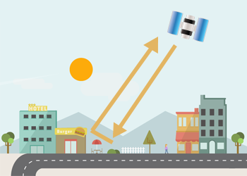
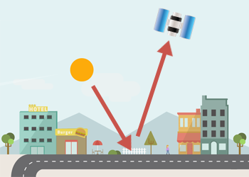
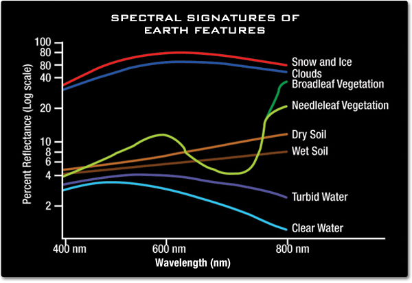
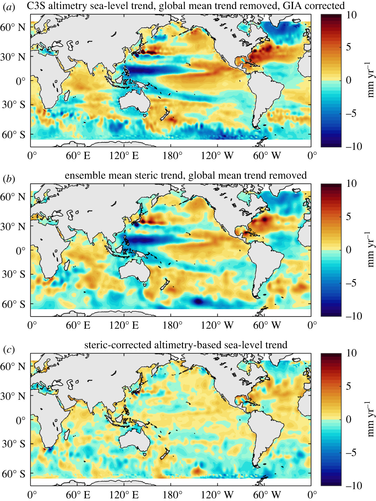

2 Week 1: An introduction to remote sensing
2.1 Summary
Remote sensing is a form or a process of data collection over the earth body, which include but not limited to:
- Biosphere (living organisms/ forms)
- Hydrosphere (terrestrial, oceanic, supra- or subglacial water body)
- Cryosphere (ice sheets, glaciers, sea ice, ice bergs)
- Atmosphere (clouds, aerosols)
- Lithosphere (soil)
Remote sensing is usually achieved using remote sensors that are on board with the satellites or aircrafts. It is also a form of cloud computing data source that requires certain computational technologies to complete remote sensing. The most well-known service provider is the National Aeronautics and Space Administration (NASA), providing numerous open-source database for easy public assess (Earth Information Centre 2024). Remote sensing has paved the way to monitor changes in remote areas e.g., deforestation in Amazon Forest and changes in relation to climate warming (Yang et al. 2013).
2.1.1 Active VS passive sensors
Remote sensing mainly adopt two different types of sensors on board each of the satellite or aircrafts – active and/ or passive. Active sensor actively emit energy, electromagnetic waves, to the ground or targeted surfaces. It then detects any changes in the returning signal (e.g., wavelength) and calculate the returning time for the approximate distance between the two. Passive sensor does not emit energy, it detects the reflected energy (also electromagnetic waves) from the illuminating source – the Sun.


2.1.1.1 Electromagnetic waves
Electromagnetic waves are the ways of energy being transported/ traveled around, like ocean waves, but electromagnetic waves do not require any medium for movement (they can even transported through a vacuumed space). Electromagnetic waves change according to the objects that they have encountered that creates a unique electromagnetic signatures – wavelengths for measurements. Electromagnetic waves are measured according to their wavelength – the distance between the crests (highest point of the cycle), while units of measurement vary from nano-meters to meters. As different materials reflect different values of electromagnetic waves, sensors then measured the changes/ types of electromagnetic wave to determine the properties of the remotely sensed material.

2.1.2 Resolutions
Resolutions tell the primary information about the satellite imagery, they can vary across different products and service providers. Understanding the resolutions is the most fundamental requirement for spatial analysts/ data users as the resolutions could significantly impact the accuracy and precision of the result. Resolutions can be divided into 4 types:
1. Spatial: It measures the size of a single grid/ pixel in the unit of cm/m/km squared. The higher the spatial resolution, the more detail of the features can be revealed.
2. Temporal: It measures the revisiting time of the sensors (satellite) in the unit of day, week, month, year. The higher the temporal resolution, the more frequent the revisiting time.
3. Spectral: It reveals the number of bands a sensor can observe. The higher the spectral resolution, the higher number of bands can be detected (objects with more wavelengths can be detected as well).
4. Radiometric: It reveals the ability of a sensor to accurately perceive and store signal, it is told by the number of bit. The higher the radiometric resolution, the higher the information/ colours it can perceive and store.
2.2 Applications
With the rapid development of technologies and the availability of open-source data, remote sensing has been widely applied across sectors: environmental protections/ conversations, disaster risks reductions, humanitarian crisis etc. The most notable break through in scientific research using remote sensing is the examination of sea-level rise in both global and local level. A new era in sea-level monitoring is facilitated by remote sensing – the satellite altimetry era since 1992/1993 (The Earth Observatory 2022).
Prior to the availability of satellite altimetry measurements of sea-level change, the only way to monitor sea-level change was using in-situ tide gauge along the coast. The limitations of using tide gauge is the spatial coverage of sea-level monitoring, it’s limited to coastal regions not open sea, and the uneven global distributions of tide gauge stations – more in the global north than global south (Beenstock et al. 2015).
2.2.1 High-precision satellite altimetry era
Since 1992/1993 when JASON/POSEIDON satellite series made available, it gave rise to a more comprehensive overview of sea-level change. Cazenave and Moreira (2022) applied satellite altimetry measurement to examine trends of global and local sea-level rise. It provides a more comprehensive spatial coverage of sea-level changes, allows the monitoring of absolute sea-level change in both coastal and open sea regions. The merits of Cazenave and Moreira (2022) work in 2022 are they also conducted model ensemble modelling, compiling several satellite altimeter datasets together to obtain mean observations to minimise biases from certain datasets. The second merit of Cazenave and Moreira (2022) is the ability to utilise altimetry record to demonstrate variations in regional sea-level change and the importance of the corrections of glacial-isostatic adjustment (GIA) and vertical land motion (VLM).
It is important to correct all possible noises e.g., local VLM brought by groundwater extractions and account for uncertainties as highlighted by Prandi et al. (2021). Global sea-level budget is a continuous evolving concept with numerous uncertainties brought by different components e.g., local rates of VLM, extent of GIA, ENSO cycle etc (Frederikse et al. 2016). Therefore, it is important to consider errors and limitations while applying remote sensing in monitoring global/ local sea-level changes. While Cazenave and Moreira (2022) paper is able to perform the awareness of the uncertainties listed above, to enhance the validity and precision of their analysis and remote sensing applications.

2.3 Reflections
I quite enjoyed the lecture as the content is quite fascinating. As a geographer, I usually used remote sensing dating such as satellite imagery or altimeter measurement data sets, to reconstruct the past observations or project the future changes but not knowing how remote sensing works. Learning the function and theory of how remote sensing work during the lecture provides me with insight on how to choose a more suitable remote sensing data sets for my (future) research based on the characteristics of the satellites and resolutions of the data sets.
I found the practical work is pretty cool that I was able to identify the relative proportion of land cover in different cities (yes I have done two of them) and compare against them through plotting the graph up in R. And for SNAP, it is a BRAND NEW tool to me and there is no doubt that I encountered quite a number of troubles while using it. However, I still find SNAP is an interesting tool that it allows the examination of satellite imagery in a very detail ways. The functions that it has got really surprised me although it is way more completed than using QGIS and ArcGIS.